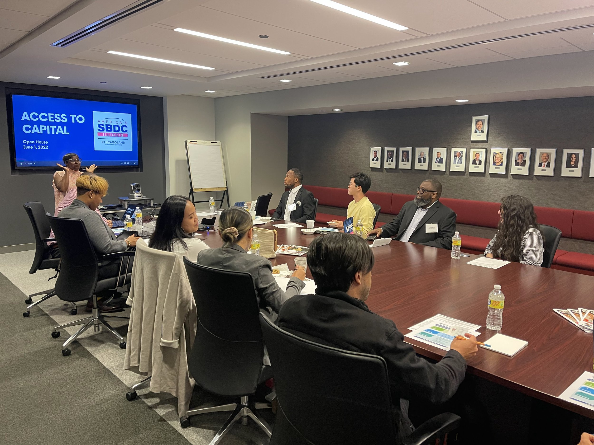
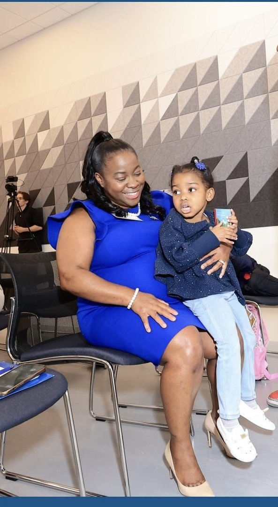
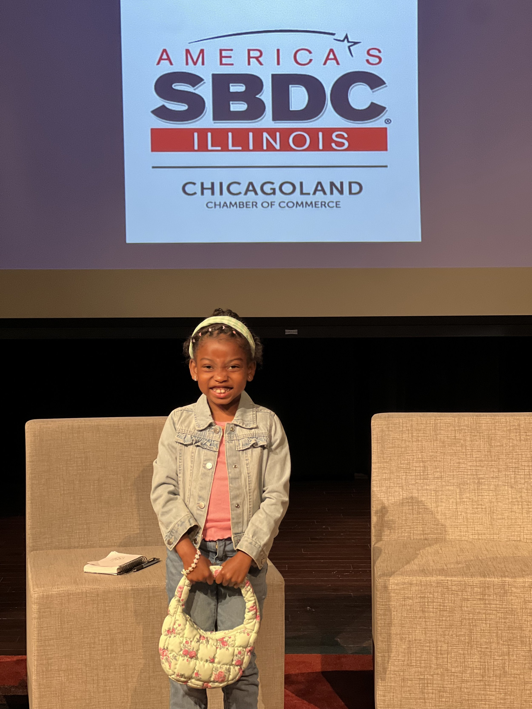
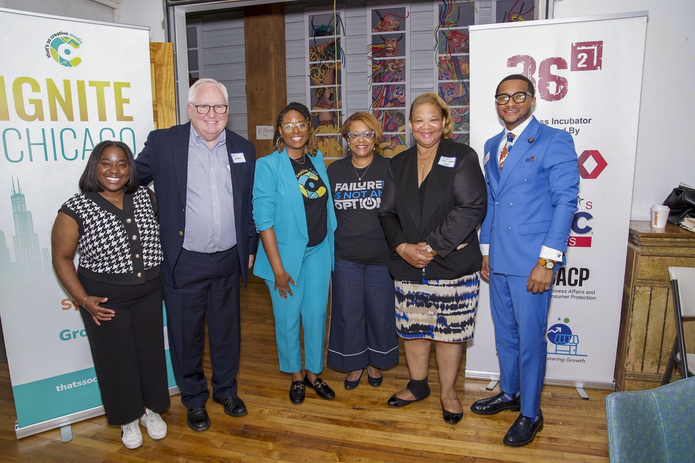

Creating Opportunity for Small Businesses
Helping entrepreneurs strengthen their ideas, pursue financing, and navigate Chicago's ecosystem of business resources.
Meet Adrienne
Adrienne McFarland has spent her career working across business, government, philanthropy, education, and community institutions. She understands how decisions are made, how resources move, and how partnerships become results. Now she's bringing that experience home to serve the 6th Ward.
My Story
Education opened doors for me. It introduced me to new possibilities, challenged me to think beyond what I could immediately see, and taught me that access to the right information, support, and relationships can change the direction of a person's life.
Throughout my career, I've worked at the intersection of business, government, philanthropy, education, and community. That work hasn't always placed me in the day-to-day operations of one neighborhood — it gave me a broader view of Chicago and how community development actually happens. I've been in the rooms where partnerships were formed, funding decisions were discussed, programs were designed, and investments were directed. I've worked alongside businesses, financial institutions, corporations, public agencies, universities, nonprofits, and community leaders.
That experience taught me how systems work. I've seen neighborhoods benefit when institutions communicate, resources are coordinated, and leadership is prepared to move an idea from conversation to action. I've also seen strong communities and talented people left waiting — not because they lacked vision, ability, or determination, but because they were disconnected from the information, resources, relationships, and decision-making that could help them move forward.
Through my work in small business and economic development, I've helped entrepreneurs strengthen their ideas, prepare for growth, pursue financing, understand government programs, and connect with banks, corporations, universities, and community partners. I've seen firsthand how much talent exists across Chicago — and how much harder people must work when access is limited and systems are difficult to navigate.
“I am running because the 6th Ward deserves a leader who understands how systems work — and knows how to make them work for the people.”
I'm not running because I believe one person can solve every challenge. I'm running because I know how to bring people together, navigate complex systems, build partnerships, and move ideas toward action. I'm ready to bring my experience, relationships, research, and commitment home to the 6th Ward.
Together, we can create a ward where opportunity is not determined by ZIP code, residents are connected to resources, businesses are positioned to grow, and families can see a future in the communities they already call home.

Why This Work Is Personal
I'm a wife, a mother, and a 6th Ward resident of 12 years. The decisions made about public safety, schools, city services, housing, transportation, and neighborhood businesses shape how families experience their lives every single day. I want our children to grow up seeing positive possibility around them.
Leadership in Action
My commitment to service is grounded in bringing people together, creating access to opportunity, and building partnerships that help communities thrive. These moments represent the work I've led across Chicago — and the values I'll bring to the 6th Ward.

Helping entrepreneurs strengthen their ideas, pursue financing, and navigate Chicago's ecosystem of business resources.

A wife, mother, mentor, and advocate — grounded in family, service, and preserving the legacy of the neighborhoods we call home.

Bringing corporations, financial institutions, government agencies, and community organizations to the same table — and turning relationships into opportunity for residents.
This campaign brings together neighbors who believe in responsive leadership, stronger connections, and greater opportunity throughout the 6th Ward.